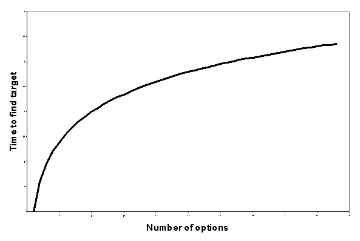

Human psychology and usability
Ergonomics and Cognetics
Ergonomics
Design guidelines for products that interact with us physically, e.g. knee chairs, ergonomic mice.
Cognetics
Design guidelines for products that interact with us mentally, e.g. Web sites!
We have to understand psychologically what humans can and can't do
The locus of attention
Attention is an important psychological concept. You can only concentrate on (or "attend to") a small amount of the information that your sense organs pick up. Examples:
- The cocktail party effect: You don't listen to other people's conversations, but if your name is mentioned you hear it!
- The sound of a dripping tap: Annoying to start with, but your brain eventually filters it out so that it's not part of your "locus of attention"
Users can't take in all information on a page simultaneously, so need to do it sequentially. This can be thought of as a "spotlight of attention".
Spotlight of attention

Eye tracking
It's useful to be able to understand the way that users look at a Web page. This can be done via eye tracking studies.
Eye tracking: findings
- Users look at text before graphics
- Novice users tend to scan the Web like a book (start at top, then left-right scanning)
- More experienced users go "middle-left-right" (the meat's in the middle!)
- Users tend to read pages in a F-shaped pattern
Eye tracking: what's going on here?


Formation of habits
- Can distinguish between "conscious" and "unconscious" actions
- Conscious actions occur in novel situations where problems need to be solved
- Conscious actions become more unconscious with experience: we form habits, e.g. driving a car, buying a book from Amazon
- Interface habits are inevitable, so try to take advantage of them, e.g. look to top left-hand corner of page for link to home
Interference
- You can't (easily) concentrate on 2 conscious things at once!
- As stress or confusion increases, people concentrate more and more on fewer features
Visibility and affordances
- Should be clear what features are available and how they are operated
- Visible means accessible to a human sense organ
- If an interface forces you to memorise the fact that a feature exists, it is invisible
- The method of operation (or "actionable properties") should also be apparent
- These are affordances. e.g. blue underlined words (hyperlinks) afford clicking
See also: Affordances and Design
Fitts' Law
- The time taken to move a cursor to a target depends on the distance to the target and its size
- Example: The menu bar on a Mac and on a PC - the menu items on the Mac are at the screen boundary, so their effective size is bigger
Here's an interactive demonstration of Fitts Law, and an account of how it was used to guide some of the design of Microsoft Office 2007
Hicks' Law
When you choose among a number of alternatives, the time to choose depends on the logarithm of the number of choices. For example, it becomes quicker to choose once from 8 items than from four items twice

When you add page loading time, it often becomes much quicker to have more options (hence the preponderance of "information-dense" Web sites around! e.g. www.bbc.co.uk, www.tiscali.co.uk)
Task
Interpret the following sites in terms of the psychological principles just described. In particular, ask yourself:
Where is your attention directed? What affordances are there? Are there places where affordances could be better?